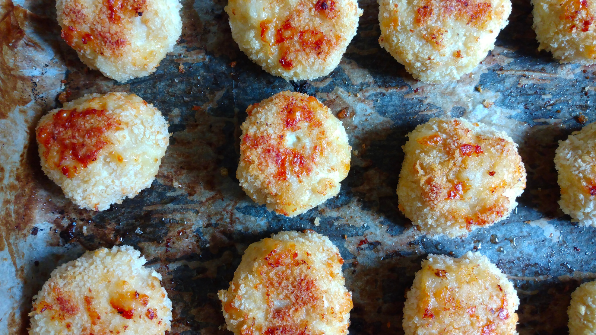

Kotlety de Pollo
- Preparación: 20 min
- Cocción: 20 - 25 min
- Porciones: 16 - 18 kotletys
INGREDIENTES
- aceite para engrasar bandeja de horno
- 500 - 600 g de carne de pollo molida
- 1 huevo
- 1 cucharada de leche ó de crema agria
- 1 cucharada de aceite de oliva
- ½ taza de queso rallado
- ¼ taza de pan molido
- ½ cucharadita de ajo en polvo sin sal
- ½ cucharadita de cebolla en polvo sin sal
- ¾ cucharadita de sal
- pimienta al gusto
- pan molido adicional para empanizar, aproximadamente 1 taza
DESCRIPCIÓN
Mi historia personal con esta receta resulta ser curiosa. Mi hijo, que no es vegetariano, es fan de este platillo que solemos llamar en casa "Pelotas de Pollo". Haciendo mis investigaciones culinarias en Google me encontré con la sorpresa de que este platillo, que me ha salvado en numerosas ocasiones, resulta tener su orígen en la cocina Rusa y Ucraniana, donde se le conoce con el nombre de Kotlety. La unica variante que yo hago es sustituir la crema agria por leche. El resultado va garantizado.
INSTRUCCIONES
- Preparar una bandeja extendida para horno con papel para hornear bien engrasada (aproximadamente 2 cucharadas de aceite). Precalentar horno a 200 °C (400 °F).
- En un recipiente hondo mezclar la carne de pollo molida, el huevo, leche, aceite, queso rallado, pan molido, ajo y cebolla en polvo, sal y pimienta. Mezclar bien hasta obtener una pasta uniforme.
- Con las manos humedecidas, dar forma a las tortitas. El tamaño depende del gusto, si se hacen de aproximadamente 4 cm de diámetro y 1.5 - 2 cm de ancho, salen aproximadamente 18 tortitas.
- Empanizar las tortitas con el pan molido adicional. Colocarlas en la bandeja para hornear, dejando espacio de 2 - 3 cm entre ellas.
- Hornear sin cubrir aproximadamente 15 minutos. Pasado este tiempo voltearlas y hornear otros 10 - 15 minutos o hasta que tengan un color dorado por ambos lados.
- Sacar del horno, dejar enfriar y servir.
Notas
- Alternativamente se pueden freír las tortitas en sartén a fuego medio, cuidando que no se quemen.
- Esta es una variación de la receta "Baked Chicken Patties/Kotletki" de Crafty Cooking by Anna.